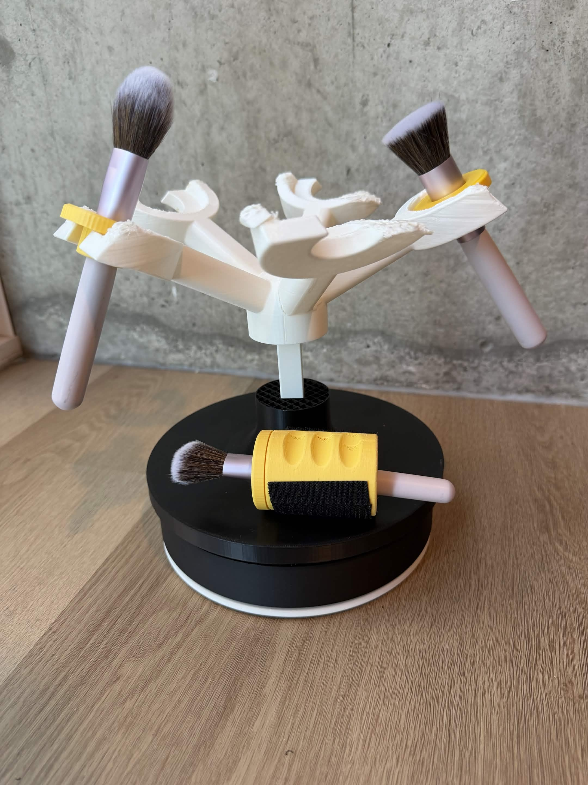
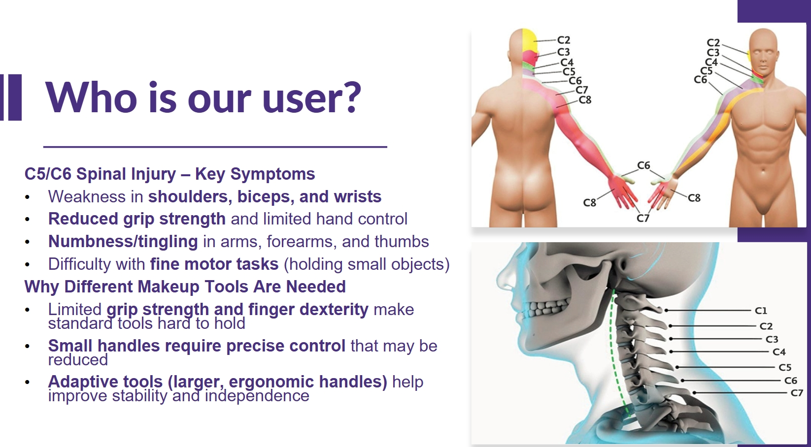
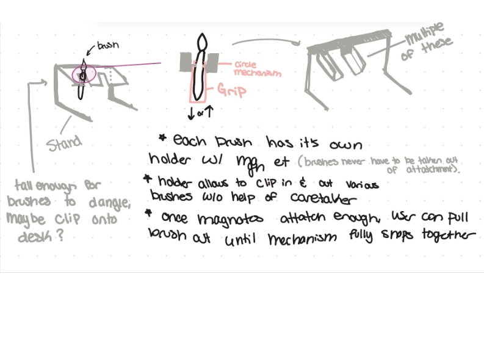
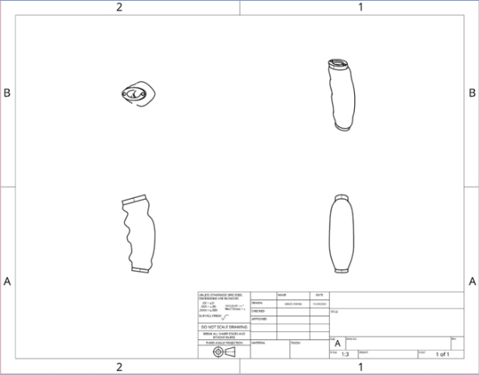
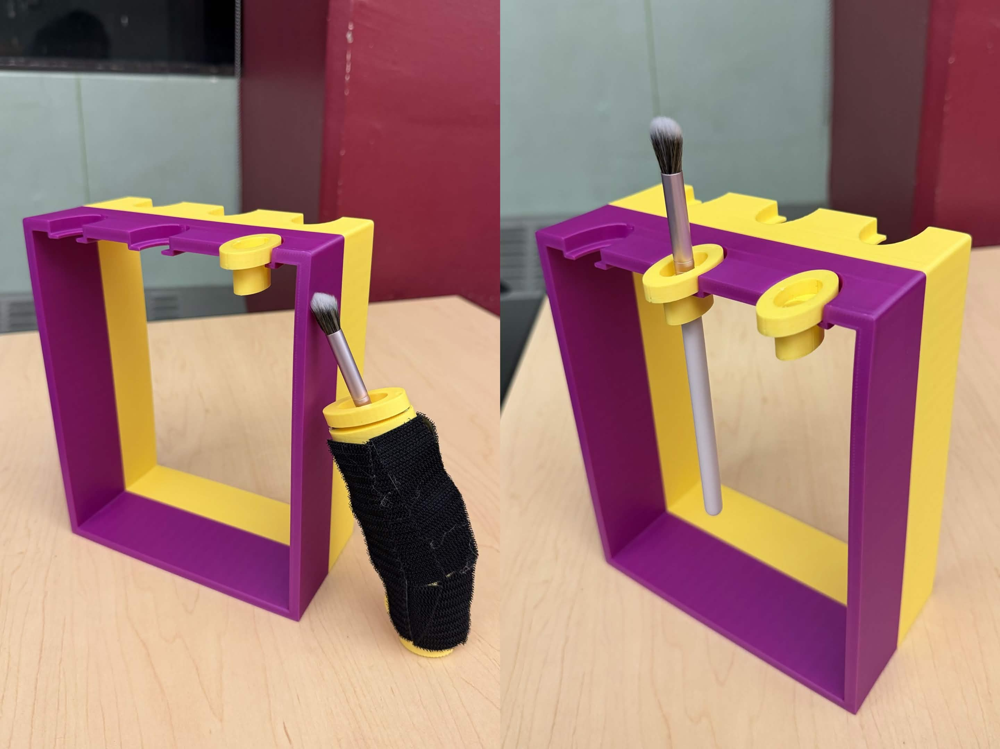
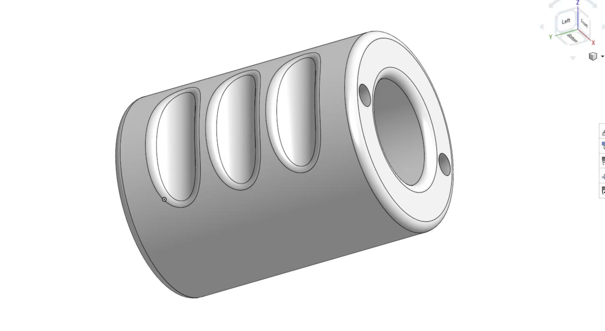
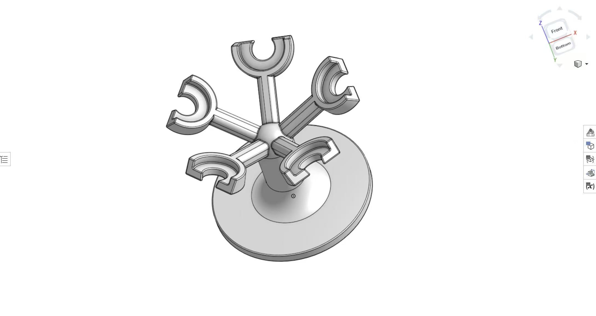
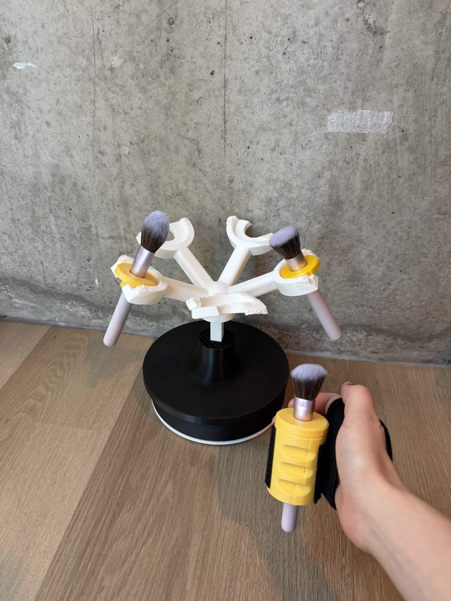
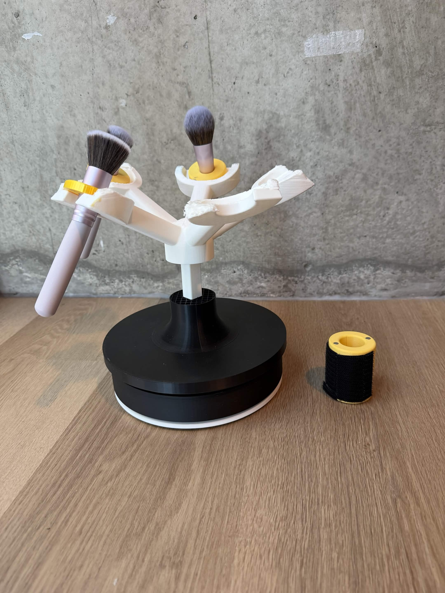

Inclusive Product Design / CAD / 3D Printing / User Testing
Accessible Makeup
Designing adaptive makeup tools that make brush handling, placement, and setup easier for people with reduced grip strength and limited hand control.

Snapshot
A physical accessibility system for holding, gripping, and retrieving makeup brushes.
Adaptive makeup tools
Prototype Designer + Fabricator + User Tester
Design, CAD modeling, 3D printing, prototype iteration, user testing
Brush stand, adaptive grip, printed parts, testing insights
User context
The design started with hand control, reach, and independence.

We focused on users who may have reduced shoulder, bicep, wrist, grip, or finger control. Standard makeup tools often rely on small handles and precise movement, so the design needed to support steadier grasp, easier brush pickup, and less dependence on a caregiver during setup.
Design process
I moved from concept sketches to printed parts and hands-on testing.
Design the interaction
I explored how a brush could hang, clip, or slide into place so users could retrieve it with less finger precision.
Print and refine
I designed and 3D printed the prototype parts, adjusting grip shape, holder clearance, and the relationship between the stand and brush attachments.
Test with users
I tested the prototypes to observe pickup, insertion, grip stability, and how the system could better support independent makeup routines.
Early concept
The first design questions were about setup, not decoration.



CAD to print
CAD helped me test comfort, clearance, and part relationships before printing.


Prototype testing
Testing showed how small physical details change usability.


Outcome
The final prototype made brush access more stable, visible, and repeatable.
The final direction combines a brush stand with adaptive grip attachments so users can store, retrieve, and hold brushes with more support. My main contribution was turning the design from an idea into working prototypes: modeling the parts, printing them, assembling the system, and learning from user testing.
Reflection
Accessible design depends on physical details people can feel.
This project taught me that inclusive product design is not only about adding a larger handle. Grip texture, brush angle, slot clearance, insertion force, and where the tool rests all affect whether a prototype feels usable.
It also made prototyping feel very direct: every print revealed something new about scale, tolerance, and comfort. User testing helped turn those observations into concrete design changes.